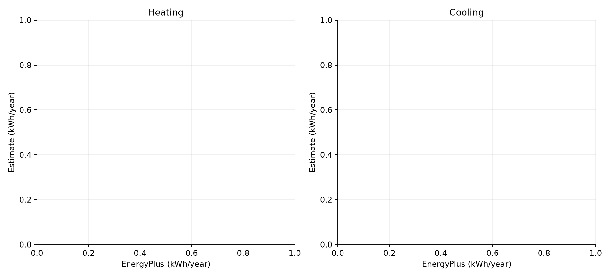

Reference dwelling experiment
3 scenarios · 120 m² · anchor: Roma__Apartment__A1
Research prototype. Thermal results are sensible ideal heating/cooling demand, not utility consumption.
Method 1: EnergyPlus for each scenario. Method 2: a 1R1C model multiplied by separate annual heating/cooling factors from one reference EnergyPlus run.
Method 3: the uncalibrated survey-driven 1R1C approximation (or strict data-only, which has no thermal kWh).
Appliance electricity is a shared model-derived input, so agreement on it is not independent validation.
Benchmark errors exclude the anchor. Agreement with EnergyPlus is not validation against real buildings.
Method comparison

Group complexity

Assumptions and limitations
- 100 m² default is a controlled hypothetical dwelling, not a surveyed home.
- Survey daily hours constrain assumed setpoint schedules, not measured hourly operation.
- Neighbour boundaries are adiabatic; ground temperature is a configurable constant.
- Fixed daily occupancy/appliance profile shapes are assumptions; annual appliance amount and household size are data-derived.
- RC uses isotropic solar transposition and a lumped capacity; EnergyPlus resolves surface heat balances.
- No claims of calibration to real meters or legal/standard compliance.
EPW source years are historical reference weather, not weather observed during the 2021 survey. Survey macro-regions do not uniquely identify the weather station.
Hybrid calibration factors: {'heating_kwh': None, 'cooling_kwh': None}
Annual results
| scenario_id |
scenario |
climate |
dwelling |
archetype |
method |
is_anchor |
heating_kwh |
heating_kwh_m2 |
cooling_kwh |
cooling_kwh_m2 |
appliance_kwh |
appliance_kwh_m2 |
| S001 |
Roma__Apartment__A1 |
Roma |
Apartment |
1 |
strict_data_only |
True |
NaN |
NaN |
NaN |
NaN |
1,669.20 |
13.91 |
| S002 |
Roma__Apartment__A2 |
Roma |
Apartment |
2 |
strict_data_only |
False |
NaN |
NaN |
NaN |
NaN |
1,669.20 |
13.91 |
| S003 |
Roma__Apartment__A3 |
Roma |
Apartment |
3 |
strict_data_only |
False |
NaN |
NaN |
NaN |
NaN |
2,500.71 |
20.84 |
Files
Exact configuration · Provenance · Annual CSV · Metrics CSV